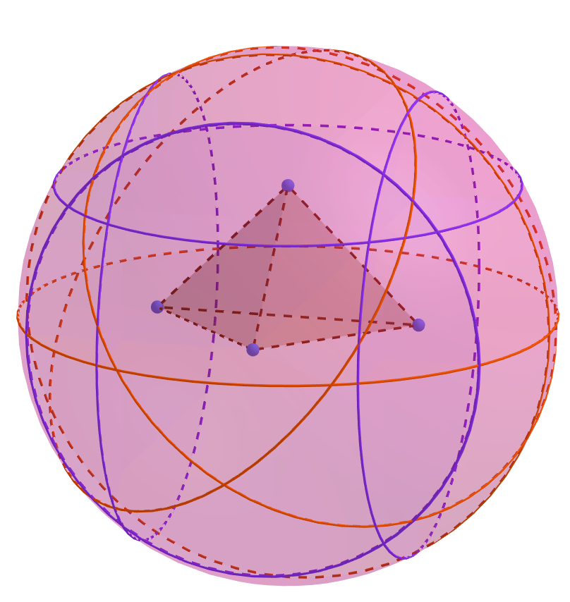
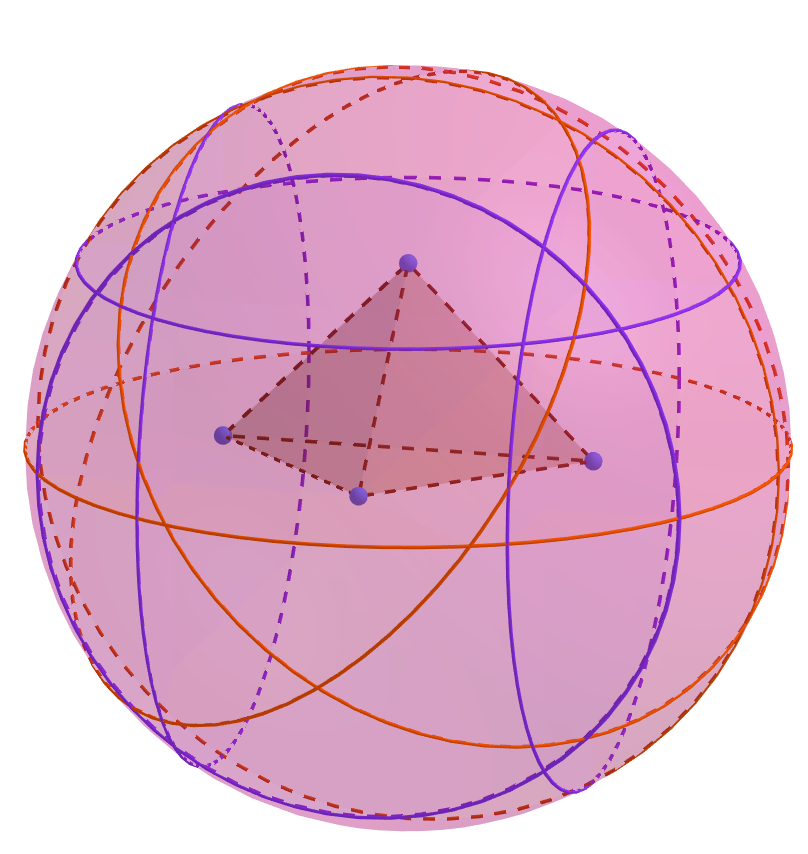

About Me


I am an assistant professor in the Department of Mathematics at the University of North Georgia. My research interests lie in Discrete Geometry, with a focus in studying circle configurations and projective polyhedra.

University of North Georgia
Department of Mathematics
Office Hours
M/T 9:00-12:00
Other times by appt.
Fall 2021 Teaching
Calculus I
MTWR 8-9 AM
Introduction to Mathematical Proof
TR 12:30 - 1:45 PM
Math Models
MWF 1-2:50 PM
Contact
Location: Gainesville Campus
Office: Watkins 219
opal.graham(at)ung(dot)edu
About Me

I am an assistant professor in the Department of Mathematics at the University of North Georgia. My research interests lie in Discrete Geometry, with a focus in studying circle configurations and projective polyhedra.